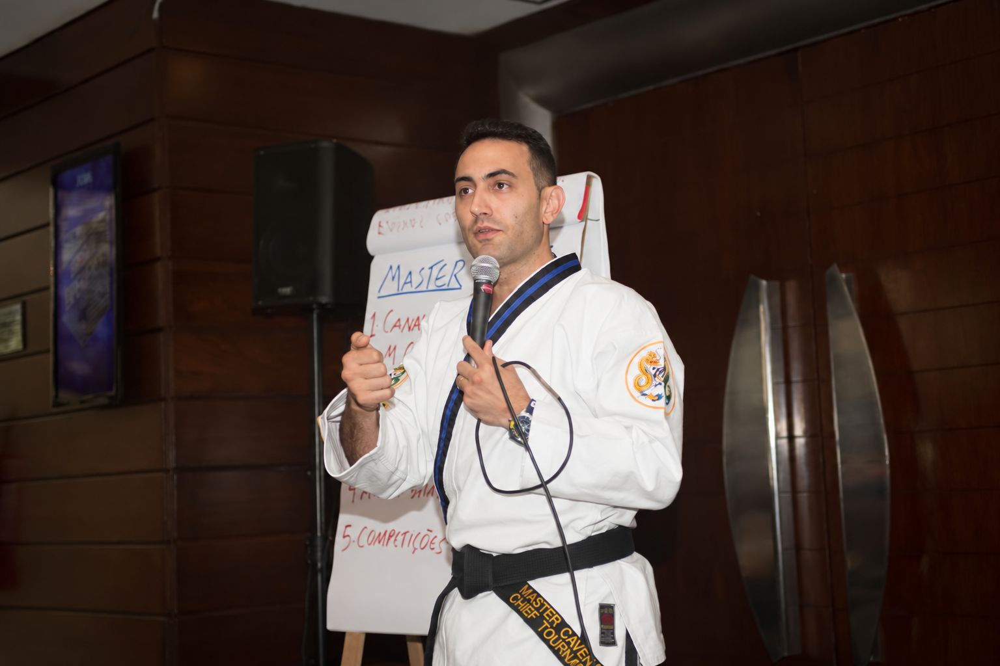

Quem vive recomeçando
Começa com empolgação, perde o ritmo e recomeça na segunda-feira seguinte.
Treinamento presencial · por Master Cavenatti
Do tatame para a vida.
Um dia inteiro, prático e acolhedor, para quem sabe o que precisa fazer, mas ainda não consegue colocar em prática. Não precisa treinar artes marciais nem ser faixa preta.

A pergunta do dia
Para muita gente, a palavra disciplina chegou cedo e em forma de correção: um bilhete da escola, uma nota baixa, alguém dizendo que faltava disciplina. Por isso rotina, constância e disciplina soam como cobrança.
A imersão parte de outro lugar. Disciplina se treina, como uma técnica. Ninguém nasce faixa preta.
“Isso acontece, não é nossa culpa. Mas nós podemos fazer as pazes e ter uma disciplina positiva nos nossos hábitos.”
Master Cavenatti
Para quem é
Começa com empolgação, perde o ritmo e recomeça na segunda-feira seguinte.
Querem cuidar da saúde, estar presentes em casa e ser exemplo de constância para os filhos.
Têm sucesso fora e sentem a vida desorganizada dentro, entre trabalho, corpo e família.
O dia · 14 de novembro
Um dia contínuo, com pausas ativas dentro dos blocos. Você escreve, desenha e pratica numa apostila própria.
Chegada, credenciamento e o clima da prática marcial.
A trajetória do Master, o espelho das três áreas da sua vida que pedem mais disciplina e o nascimento da pergunta central.
De onde vem a sua disciplina, amor ou dor, fé ou medo. Celular, procrastinação, desistência, pessoas negativas e o paradoxo da recompensa.
Clareza mecânica e clareza original. Sua nota nos 7 pilares da vida, um objetivo claro para cada um e o Filtro para as decisões do dia a dia.
Fé e disciplina como cuidado, não punição. Temperamento, perfil, medo central e a sua referência em disciplina.
A rotina ideal, os três combustíveis diários (espírito, mente e corpo), o imprevisto previsto e o desenho do seu dia de amanhã.
O Filtro em ação, o compromisso escrito, o próximo passo e o ritual final com foto do grupo.
O bloco A raiz traz conteúdo de base cristã, com passagens bíblicas sobre disciplina.
O que você leva
Meus 7 pilares
p. 3O que eu faço hoje me aproxima ou me afasta da minha visão?
Notas ilustrativas

Quem conduz
No Taekwondo desde 1994 e cofundador da Kihap, rede de escolas de artes marciais com mais de mil alunos. Há mais de uma década forma alunos de todas as idades no tatame, de crianças a adultos e famílias. Na imersão, leva esses fundamentos para a vida de quem nunca treinou.
Ingressos
São 80 vagas para o dia.
Individual
R$297
Uma pessoa, com apostila da imersão.
Quero o individualDupla
R$499
Duas pessoas, R$ 249,50 cada, com duas apostilas.
Quero o ingresso duplaTem desconto? Quem faz parte destes grupos recebe um cupom por e-mail para usar no fechamento da compra:
Inscrição
Preencha seus dados. Você recebe o endereço e as orientações do dia por e-mail.
Perguntas
Não. A imersão é para quem nunca pisou num tatame. Os fundamentos da arte marcial entram como forma de pensar e de organizar a rotina.
O credenciamento abre às 12h30 e a imersão vai das 13h às 19h, num formato contínuo. As pausas acontecem ao longo dos blocos.
São 80 vagas. O ingresso dupla ocupa duas.
Em Brasília, DF. O endereço completo é enviado por e-mail aos inscritos.
Membros do time, Academy e faixas pretas recebem o código por e-mail. Basta informar o cupom no fechamento da compra.
Um dos blocos, A raiz, fala de fé e disciplina a partir de passagens bíblicas. O restante do dia trata de hábitos, clareza, planejamento e rotina.